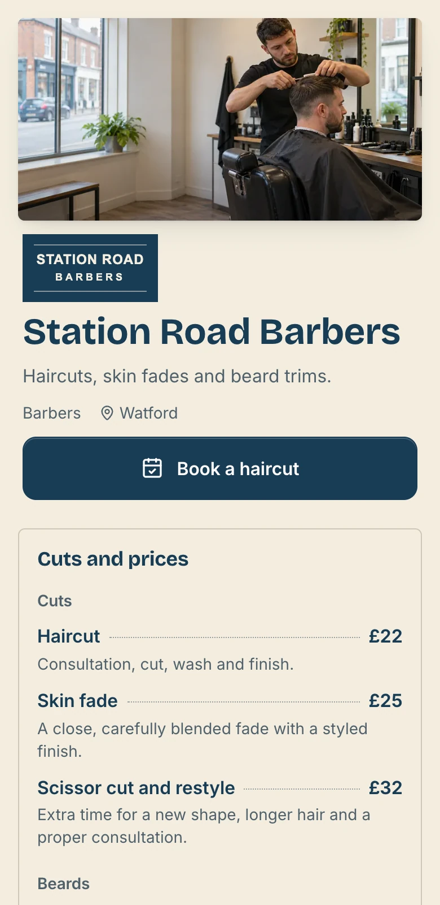
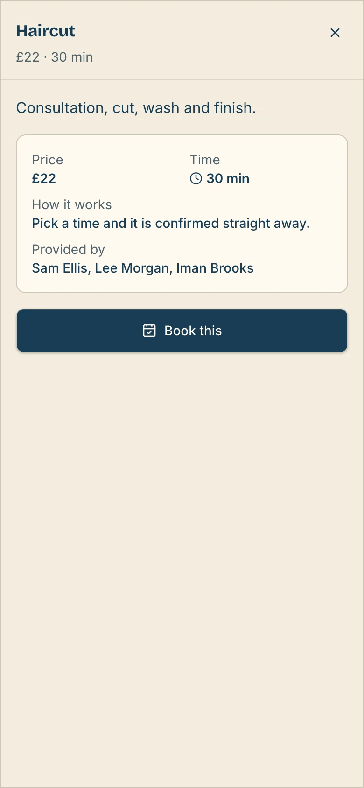
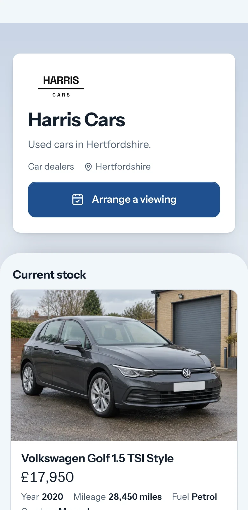

TAPLO · FOR YOUR KIND OF BUSINESS
Your business.
One good page.
The work. The prices. The next step.


Services · bookings · stock · sharing
MAKE THE NEXT STEP OBVIOUS
See the price.
Book the haircut.
Useful details. One clear action.

A real interface, using a fictional business
MAKE IT FEEL LIKE YOU
Same business.
Your own look.
Colours, type and layouts you can change.

High Street

Workbay
Your content stays yours.
FOR THE NEXT CUSTOMER
Stock worth
looking at.
Big photographs. The facts buyers need.

Vehicles shown are illustrative examples.

Your business.
All together.
Make a page that does the useful things.
Start free ↗
Make your Taplo.